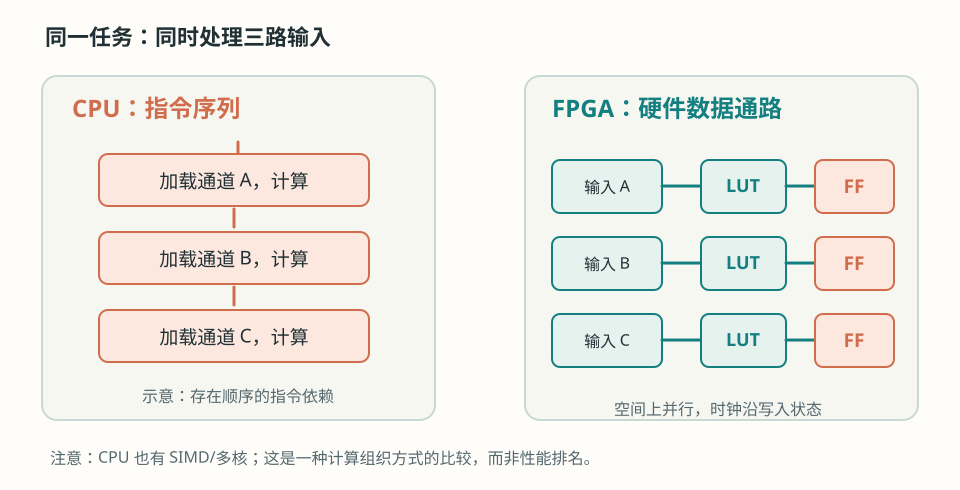
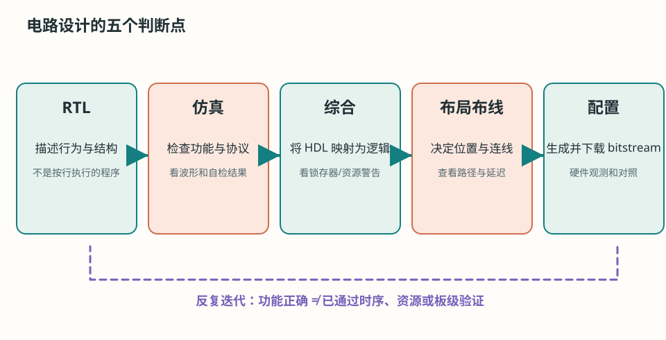

FPGA 究竟在执行什么？
从 CPU 与可重构逻辑的差别出发，追踪 LUT、触发器、互连和时钟，直到一段可综合的 LED 逻辑。
01 / FPGA 为什么不是另一种 CPU？
设想一块开发板每秒接收数百万次输入脉冲。你写下三行 Verilog：三个计数器分别处理不同通道。芯片是“先运行第一行，再运行第二行，再运行第三行”吗？
不。Verilog 的可综合部分描述的是硬件结构和并发行为。三个独立寄存器及其组合逻辑可以在同一个时钟周期内同时工作，综合后的关键问题变成了它们分别占据哪些逻辑单元、如何连线、能否满足时序。

处理器执行软件指令，有寄存器文件、指令流、缓存和流水线；现代 CPU 也有多核与 SIMD。FPGA 则提供大量可配置逻辑资源，允许设计者直接构造特定数据通路。两者常组合使用：CPU 负责调度与复杂控制，FPGA 负责确定延迟、并行流处理或专用接口。
02 / FPGA 芯片里到底有什么？
一颗 FPGA 不只是可编程“门电路海洋”。典型器件包含查找表（LUT）、触发器（FF）、可编程互连、I/O 资源、时钟网络，以及依器件不同而存在的 Block RAM、DSP 乘加单元和高速收发器。
| 资源 | 主要作用 | 你在 RTL 中怎样使用 |
|---|---|---|
| LUT | 实现布尔函数；输入组合决定输出 | assign、条件逻辑、部分算术运算 |
| FF | 在时钟沿采样、存储状态 | always @(posedge clk) |
| 布线与开关矩阵 | 连接逻辑、存储器、I/O | 由实现工具选择，不写成普通顺序代码 |
| BRAM / DSP | 存储与高效算术 | 可能从推断风格映射，也可使用器件原语/IP |
例如 AMD 7 系列的 LUT 可作为 6 输入查找表，也有特定双输出工作模式；这不是所有 FPGA 均相同的物理规格。不同厂商和系列的 ALM、LUT、存储资源与互连拓扑存在差异。
可以将单个 LUT 想象成一个由输入位选择的真值表：对于一个 N 输入布尔函数，需要给出其 2^N 种输入组合下的输出。该类比适合解释功能，但不能单独预测逻辑利用率和最终时序。
03 / 从源代码到下载文件，经过什么？
编写 RTL 只是工程的起点。仿真证明的是在模型和激励下的功能；综合尝试将描述转为可用逻辑；布局布线决定物理位置与路径；静态时序分析检查时钟与数据路径约束。

- 描述与约束。 确定顶层模块、时钟频率、I/O 管脚和必要的时序例外。
- 功能验证。 编写 testbench，覆盖复位、边界值、握手状态与错误条件。
- 综合与资源检查。 检查未驱动信号、意外锁存器、截断、组合回路。
- 实现与 STA。 检查最大/最小路径延迟、跨时钟域问题及实际时钟假设。
- 板级验证。 对照仿真，考虑时钟源、按键、电平和外部设备行为。
04 / 一个完整的最小硬件：LED 分频翻转
假设开发板提供稳定的 50 MHz 时钟，想让 LED 以 1 Hz 的完整亮灭周期重复。一个周期包含亮 0.5 秒与灭 0.5 秒，因此每 25,000,000 个输入时钟沿翻转一次 LED。计数器必须能表示从 0 到 24,999,999，25 位足够。
module led_blink (
input wire clk, // 50 MHz
input wire rst_n, // 同步、低有效复位输入
output reg led
);
localparam integer HALF_TICKS = 25000000;
reg [24:0] count;
always @(posedge clk) begin
if (!rst_n) begin
count <= 25'd0;
led <= 1'b0;
end else if (count == HALF_TICKS - 1) begin
count <= 25'd0;
led <= ~led;
end else begin
count <= count + 25'd1;
end
end
endmodule每一个时钟沿，只会执行相应条件分支，但综合出的 count 和 led 是同时存在的触发器。<= 表示时钟过程里的非阻塞赋值，避免把同一个时钟沿的状态更新误写成顺序数据依赖。
检查公式：计数器从 0 数到 HALF_TICKS - 1，恰好经历 25,000,000 次时钟采样；在 50 MHz 时钟下相当于 0.5 秒。因此完整高低循环为 1 秒，即 1 Hz。这里默认 LED 电平与亮灭对应关系已按板卡原理图确认。
05 / FPGA、MCU、GPU、ASIC 怎样选？
| 维度 | FPGA | MCU / CPU | GPU | ASIC |
|---|---|---|---|---|
| 执行组织 | 可配置空间数据通路 | 通用指令执行 | 大规模并行计算 | 固定专用硬件 |
| 修改功能 | 重新综合、实现和配置 | 替换软件 | 替换内核/软件 | 通常要重新制造 |
| 入门门槛 | RTL、时序与板卡约束 | 软件编程与外设 | 并行编程与内存模型 | 验证、物理设计与制造 |
| 适合问题 | 定制协议、低延迟流处理 | 复杂控制与通用软件 | 吞吐型数值计算 | 大批量固定功能 |
不同器件之间不存在单一最优答案。决定前应先提出三个具体问题：数据怎样到达？允许多少时钟周期的延迟？预计怎样验证并维护系统？
思考练习：两个传感器需要同时记录边沿，能否使用两段并行 RTL？
可以构建独立边沿检测电路，但若两个传感器不与系统时钟同步，各自输入的同步和亚稳态风险必须另行处理。并行 RTL 本身不能解决跨时钟域问题。